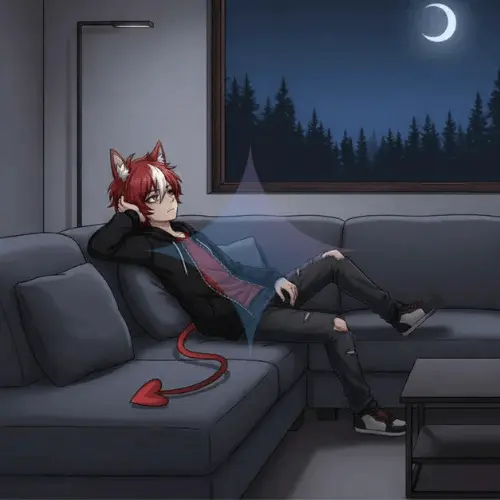

Name: Arturus Nocthar
Species: Lycanothus ⓘLycanothus is a taxonomic term that identifies an Infernal Beast. The name is derived from the combination of Lycan (wolf/beast) and Chthonius (Underworld/Earth), denoting a Canid with lineage from the Underworld.
Subspecies: Pseudo Hybrid
Identification: ZAE#001
Weight: 64kg
Height: 189cm
Gender: Male
Classification: N/A
Note: According to information provided by the entity, we deduce that it is around TCT7T7 17Y771A5 r18 18r17r years old, and we specify its species according to the information it provided us and the investigation.
Information
Entity ZAE#001, better known as Arturus Nocthar (Arturo), is described as a pseudo-hybrid with predominantly human anatomy, although lupine features and a clear demonic genetic burden are distinguishable in its morphology. Its very existence represents an unprecedented biological and supernatural anomaly, constituting the first entity of this type recorded in the UPEA Corporation archives.
There is no conclusive information about his origin. The subject himself claims to have lived for more than hj1A q181h1B419185 171r 1755184h5 hv17h hv18 q171B518 1As v195 y1A1t18i19hm y19185 191 v195 r18z1A119q v18419h17t18, which preserves him from natural aging. He acknowledges, however, that he is not immortal, admitting that divinity in any of its forms could end his existence, although he clarifies that traditional methods used against demons, such as holy water or basic exorcisms, are ineffective. What is unsettling is that not even he seems certain of what he really is: he doubts whether he is a hybrid between human and demon or, failing that, a creature that should never have existed.
His appearance at the UPEA Corporation facilities was not the result of an attack or any act of hostility. On the contrary, he entered of his own free will and expressed a desire to collaborate with the corporation, requesting a space to remain. The information he provided was scarce, although he claimed to possess memories linked to the V1Aym e1Az171 b8z219418, which would reinforce the veracity of his longevity. He also expressed a singular theory: S1A4t18hh191t 1B1118q1855174m z18z1A419185 j1A1Byr p18 17 117h1B417y z18qv171195z hv17h 17yy1Aj5 v19z h1A 24185184i18 m1A1Bhv, 175 hv18 z191r r1A185 11Ah p18q1Az18 1Ai184y1A17r18r 171r, q1A151831B181hym, hv18 p1Arm r1A185 11Ah r18h184191A417h18 175 31B19qxym.
Regarding his abilities, he has demonstrated considerable mastery of r18z1A119q 181184t19185, j19hv 17 2174h19q1By174 17ss19119hm s1A4 191s184117y s19418, jv19qv v18 z1711921By17h185 175 171 18lh1815191A1 1As v195 j19yy. V195 17p19y19hm h1A y18i19h17h18 171r q1Ai184 5v1A4h r195h171q185 191 hv18 17194 v175 17y51A p18181 q1A1s194z18r, 17 5x19yy v18 v19z518ys 17hh419p1Bh185 h1A 17 i17z219419q q1Az21A1181h 191 v195 117h1B418. Added to these manifestations is a physical resistance superior to that of humans and a presence that usually generates discomfort and, in some cases, slight fear. The intensity of these sensations depends largely on the mental fortitude of the individual facing him, as well as on the capacity of an intelligent entity to 17qq182h v195 18l195h181q18 j19hv1A1Bh s1818y191t 191s184191A4. However, Arturus shows no interest in hostility or deliberate intimidation; he maintains a state of neutrality, unless provoked with sufficient intensity to disrupt his control.
Arturus’s behavior is difficult to decipher. While his attitude is calm and even cooperative at times, it conveys a constant sense of ambiguity. He appears reserved, calculating, and evasive on key topics, yet retains expressions typical of a rebellious, youthful spirit that seems to contradict his claimed antiquity. He has shown no open hostility, but the implicit threat he projects makes him a perpetual enigma for corporation personnel.
The danger level of ZAE#001 cannot be determined accurately at this stage of research. It is evident that its potential exceeds human limits and that its origin remains shrouded in mysteries that question both biology and spiritual nature. Its very existence demands extreme caution, while opening a range of possibilities and fears that current science is unable to explain.
Observations and Behavior
UPEA Corp. — FileNo data currently recorded.
No data currently recorded.
Vocalization is characterized by a youthful male range with a neutral tone. The subject exhibits notable emotional restraint, making his mood or disposition consistently indecipherable.
Aggression only manifests as a reactive response to provocations or perceived disturbances that reach a significant impact threshold for the entity.
The entity demonstrates capabilities that transcend known physical laws, including z1711921By17q19YA1 m 241Am18qq19YA1 r18 181184tY917 Y9t11817 r18 117h1B417y18n17 171YAz17y17 (21941A31B191185195 191s184117y) m 1B117 y18i19h17q19YA1 y19z19h17r17, 2184z19h19Y81r1Ay18 sy1Ah174 1A r1852y17n174518 5191 51A21A4h18 17 r195h171q19175 q1A4h175 r18y 51B18y1A. Additionally, the mere presence of the subject induces a passive emotional response, manifested as sensations of intense discomfort and fear.
The information recorded in Observations and Behavior, and information in general, may be modified to update necessary data provided by the EAZ entity itself or derived from studies and research conducted by UPEA Corporation.
Last Information Update: N/A